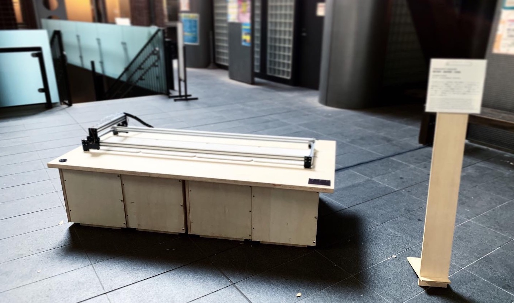

transient record
, Record Charactors temporarily with water
Transient record records characters and pictures temporarily. This machine writes the information that is flowing in the world by drawing water droplets. The information fades with time and then disappears. In an era of information overload, there are many characters and pictures that are temporarily talked about and are quickly discarded. We aim to draw out the beginning and the end of the information, released to the world by visualising such information temporarity and drawing it as it disappears.
transient recordは、文字や絵を一時的に記録することができるマシンです。 このマシンは、バーを移動させながら、水滴パターンでその時世間で流れている情報を書き出します。 その情報は、一時的に刻まれ、時間の経過とともに滲み、薄れ、やがて消えていきます。 情報過多の時代において、一時的に話題になり、すぐに廃れていく文字や絵が多く見受けられます。そんな情報を一時的に表出させ、消えていく様を描くことで、世界に放たれる情報のはじまりとおわりを描き出すことを目指します。


Credit
Idea: Juri Fujii
Program: Hidemaro Fujinami, Ryo Ohara
Hardware: Juri Fujii
Skill
Fluid Control, Hardware Engineering, Material
Exhibition
iiiExhibition 2019